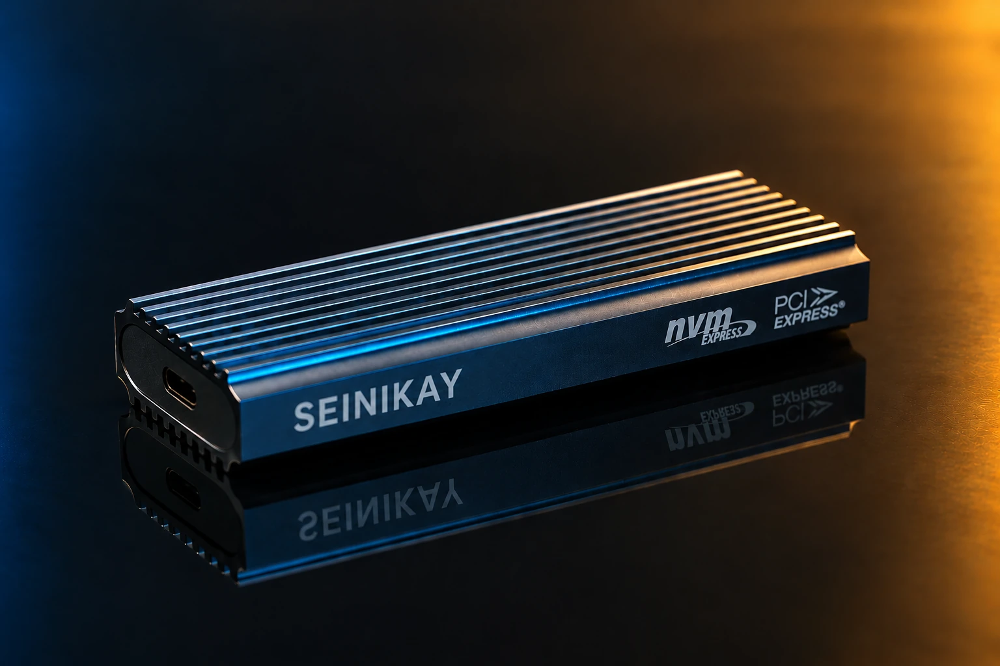
PRODUCT & E-COMMERCEClean. Detailed. Effective.
Images built to sell, explain, and stay remembered — from product and e-commerce work to events, automotive, portraiture, and creative compositing.
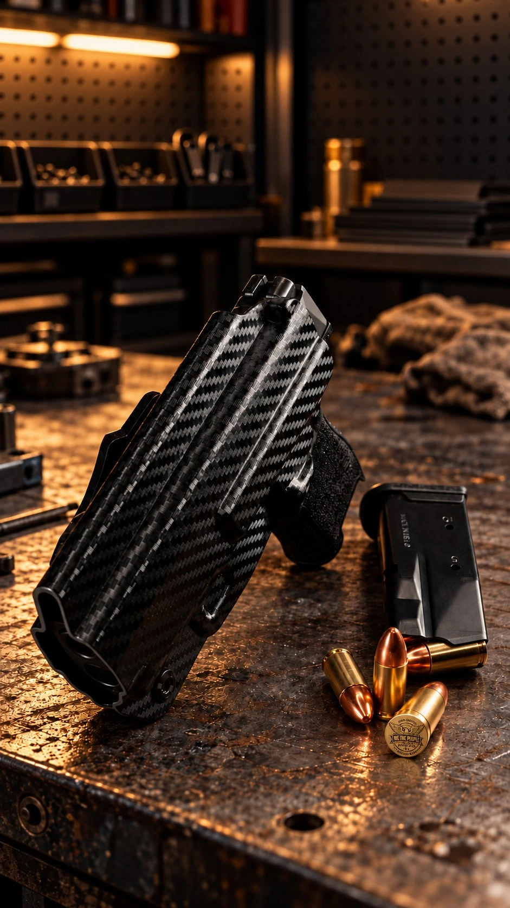
Photography and visual production across products, people, places, and creative campaigns.

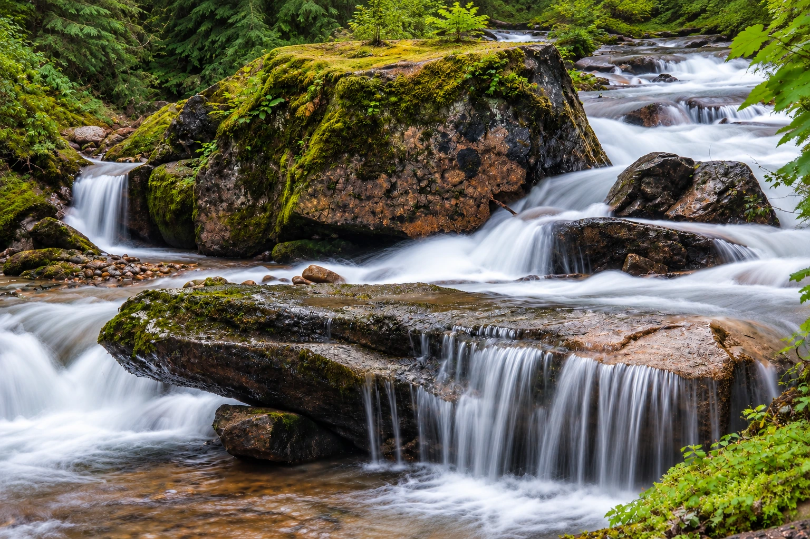
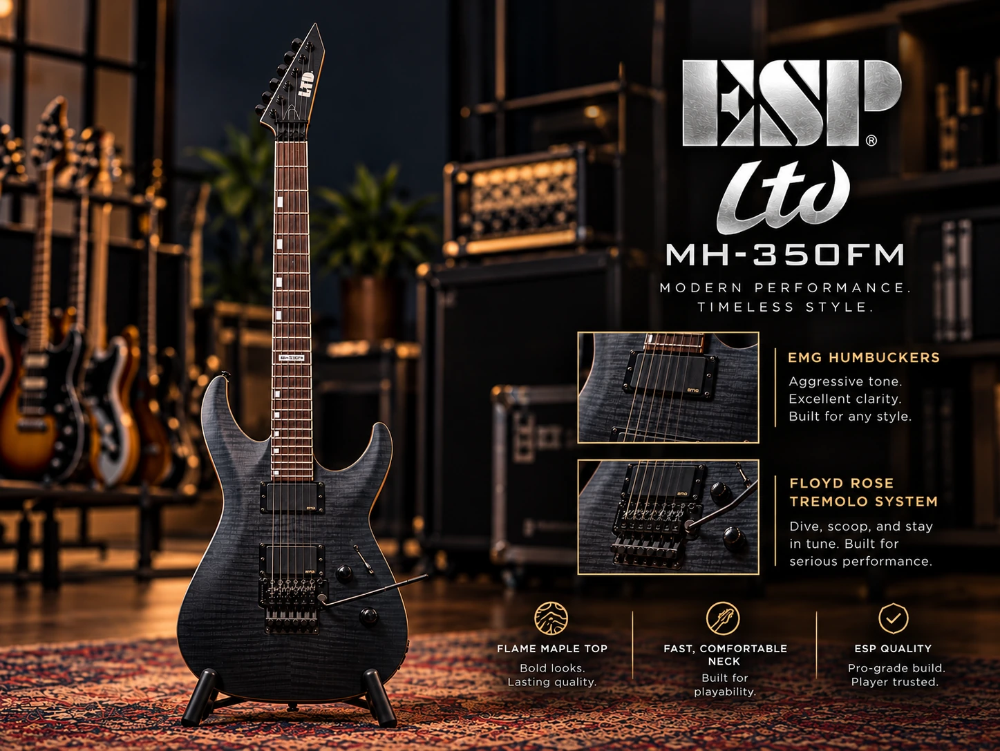
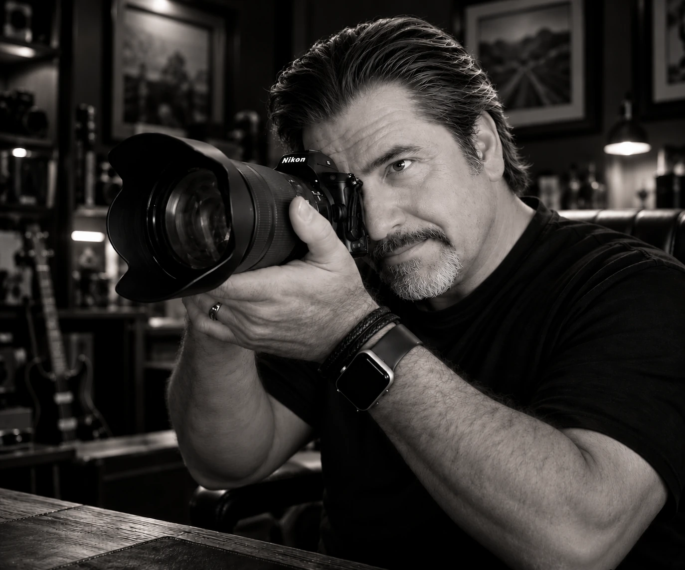
I began my photography career in Seattle, then built a 30+ year career through Hawaii, Chesapeake, Virginia, and Las Vegas. My work has included product and e-commerce photography, automotive and motorsports, events, weddings, architecture, portraiture, and mobile corporate headshots.
Along the way I supported photographers at Canon, produced commercial imagery across a wide range of industries, and developed deep experience in Photoshop, retouching, compositing, and visual production. Today I focus on making images that are technically strong, believable, and useful — not just decorative.
Relocating to the Nashville / Murfreesboro, Tennessee area in early November 2026.
Controlled light, clean surfaces, believable texture, and production-minded consistency.
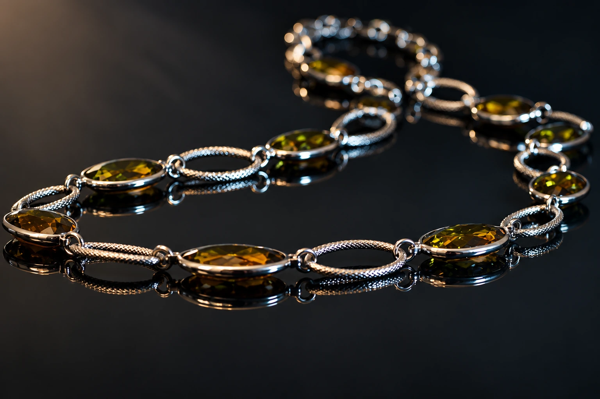
Campaign concepts, visual treatments, compositing, graphic transformation, and AI-assisted creative production.
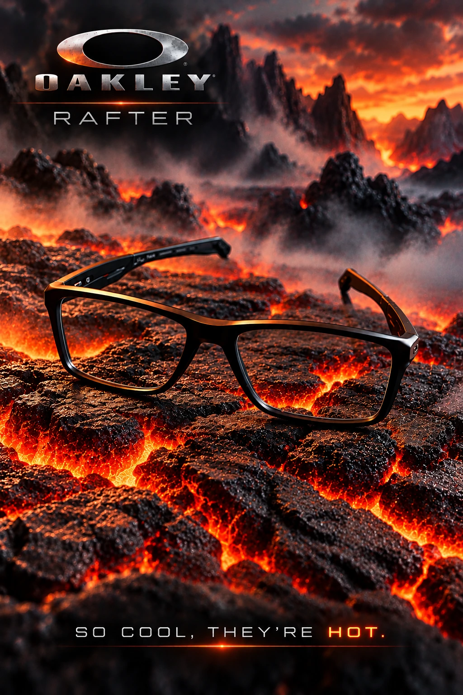
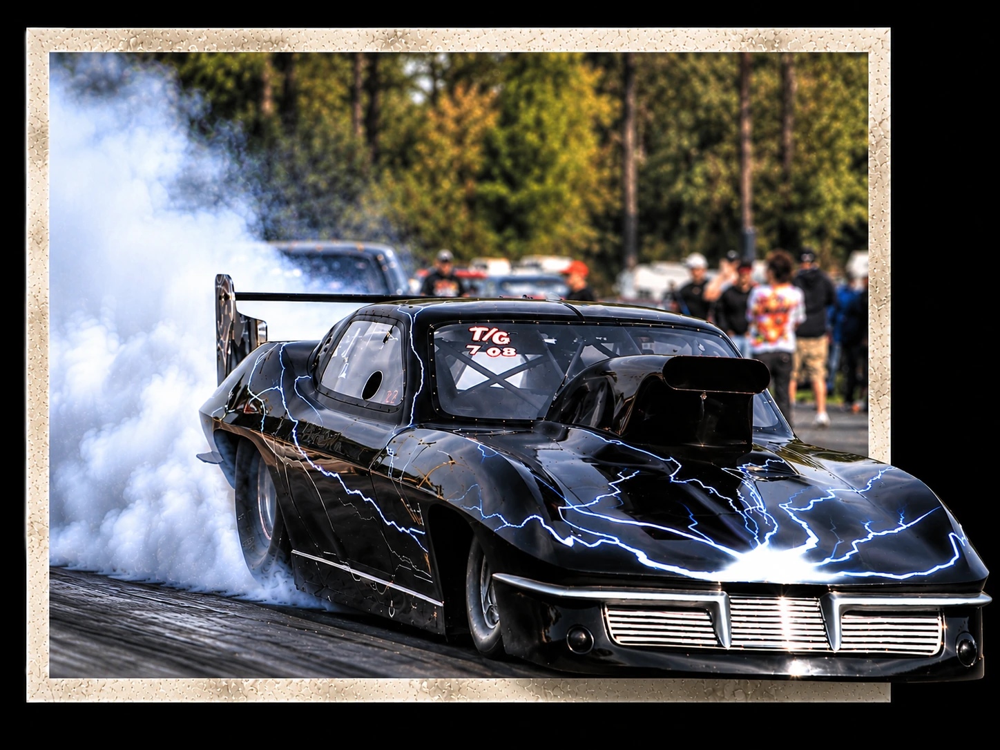
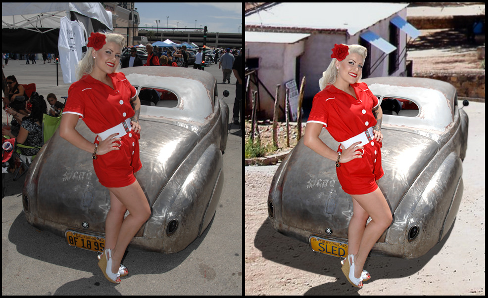
Live performance, corporate events, audiences, and candid human interaction.
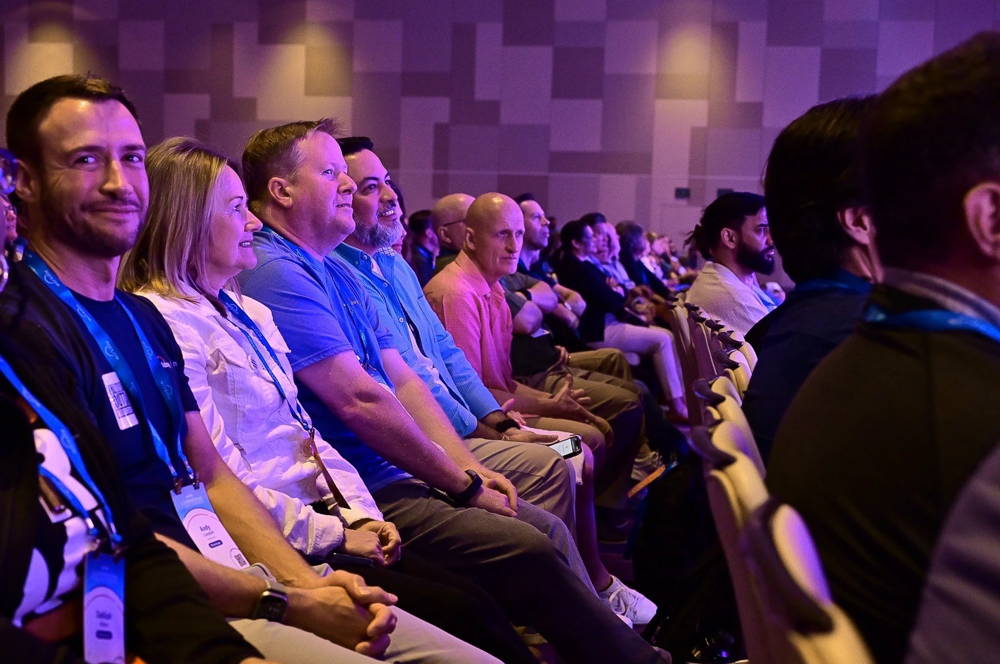
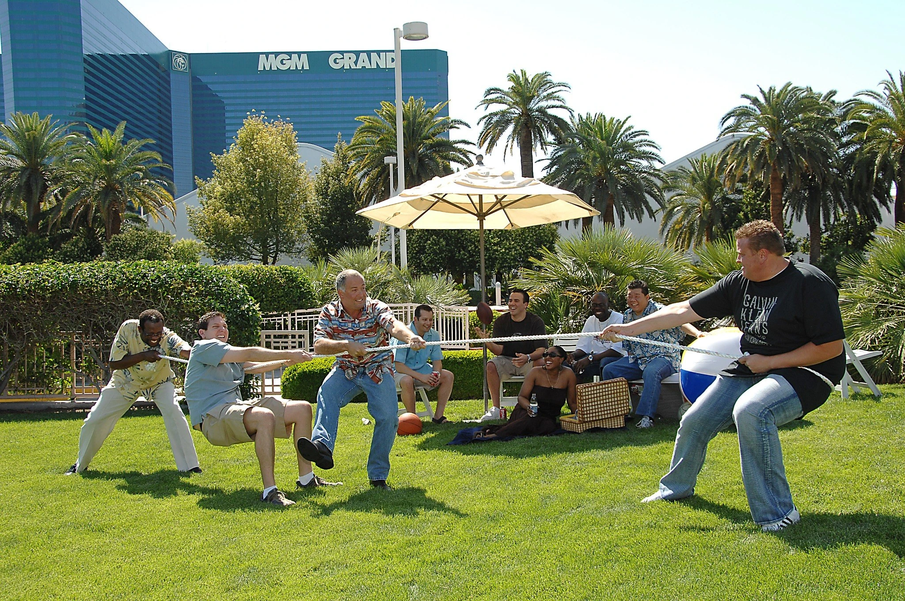
Romantic portraiture, storytelling details, and intimate moments without overworking the scene.
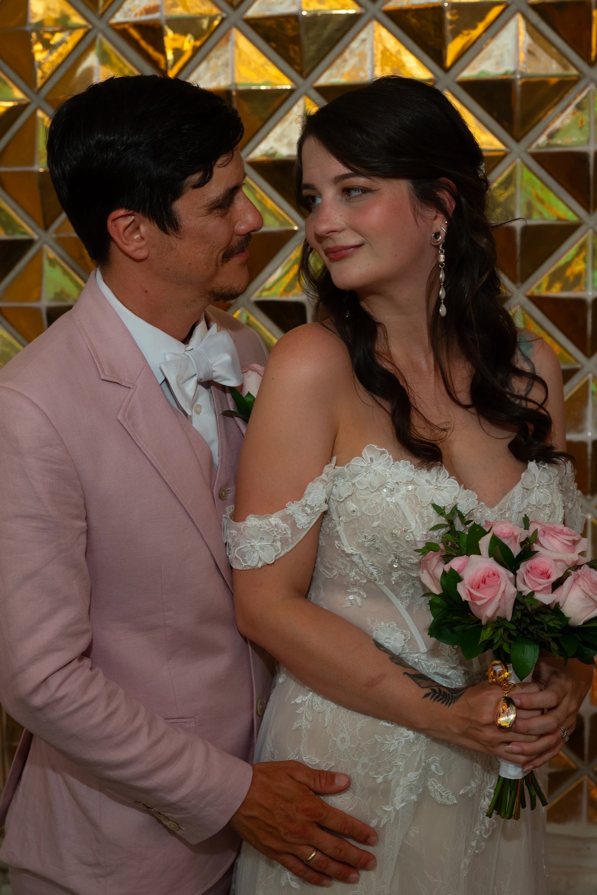
Cars, racing, and the visual culture around them.
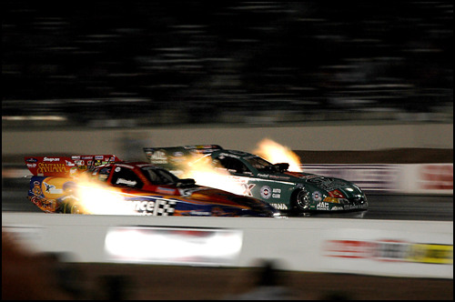
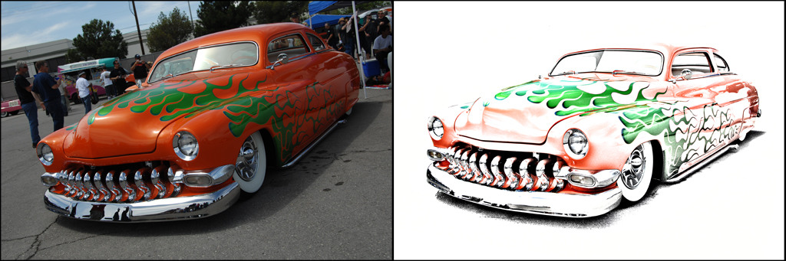
The Funny Car image is intentionally presented at a smaller size because the surviving source file is low resolution.
Travel and landscape work shaped by timing, atmosphere, and the character of a place.
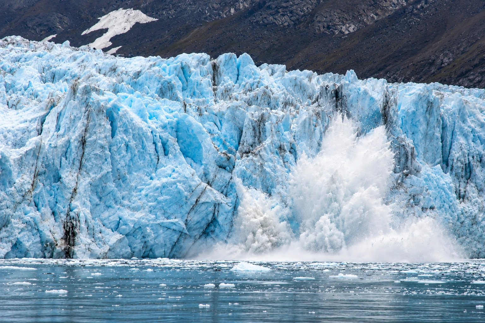
Photography, digital imaging, Photoshop, graphic design, e-commerce production, customer support, and team leadership — brought together in one visual-content career.
VIEW RÉSUMÉ PDF ↗Henderson, Nevada
Relocating to the Nashville / Murfreesboro,
Tennessee area in early November 2026